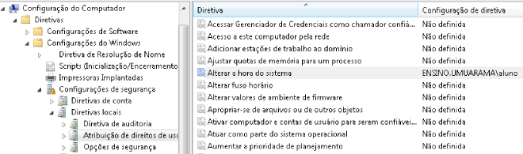
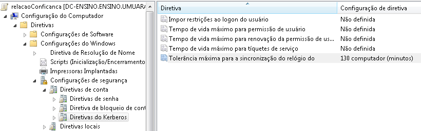
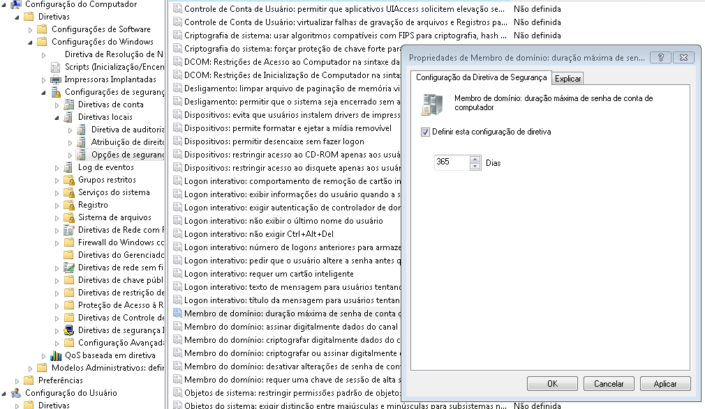

Políticas para Active Directory
Administrator Local
- Criar um grupo global;
- Adicionar usuários que serão administradores;
-
Criar uma gpo com nome
adm_local. Use o nome que achar conveniente; - Caminho da GPO:
- Na coluna adicione o grupo criado anteriormente;
- Em propriedades, em "Este grupo é um membro de:" Clique em Adicionar... e no campo grupo preencha com "administradores".

Lembrando que todo usuário que incluir neste grupo, terá poderes administrativos somente na máquina local.
Acesso remoto
Configurando o acesso remoto:

Login automático
Atualize as informações conforme usuário definido.
Login automático do Windows:

Detalhes de AutoAdminLogon:
Ação: Atualizar
Hive: HKEY_LOCAL_MACHINE
caminho da Chave: SOFTWARE\Microsoft\Windows NT\CurrentVersion\Winlogon
Nome do valor: AutoAdminLogon
Tipo de valor: REG_SZ
Dados de valor: 1
Detalhes de DefaultDomainName:
Ação: Atualizar
Hive: HKEY_LOCAL_MACHINE
caminho da Chave: SOFTWARE\Microsoft\Windows NT\CurrentVersion\Winlogon
Nome do valor: DefaultDomainName
Tipo de valor: REG_SZ
Dados de valor: ensino.umuarama.local
Detalhes de DefaultPassword:
Ação: Atualizar
Hive: HKEY_LOCAL_MACHINE
caminho da Chave: SOFTWARE\Microsoft\Windows NT\CurrentVersion\Winlogon
Nome do valor: DefaultPassword
Tipo de valor: REG_SZ
Dados de valor: aluno123
Detalhes de DefaultUserName:
Ação: Atualizar
Hive: HKEY_LOCAL_MACHINE
caminho da Chave: SOFTWARE\Microsoft\Windows NT\CurrentVersion\Winlogon
Nome do valor: DefaultUserName
Tipo de valor: REG_SZ
Dados de valor: aluno
Proxy
Configurando proxy nos computadores clientes:

Detalhes de ProxyEnable:
Ação: Substituir
Caminho da Chave: Software\Microsoft\Windows\CurrentVersion\Internet Settings
Nome do valor: ProxyEnable
Tipo de valor: REG_DWORD
Dados de valor: 00000001
Base: Hexadecimal
Detalhes de ProxyOverride:
Ação: Substituir
Caminho da Chave: Software\Microsoft\Windows\CurrentVersion\Internet Settings
Nome do valor: ProxyOverride
Tipo de valor: REG_SZ
Dados de valor: 192.168.*;<local>
Detalhes de ProxyServer:
Ação: Substituir
Caminho da Chave: Software\Microsoft\Windows\CurrentVersion\Internet Settings
Nome do valor: ProxyServer
Tipo de valor: REG_SZ
Dados de valor: 192.168.0.6:3128
Essa regra é para a página inicial do Internet Explorer. Detalhes de Start Page:
Ação: Substituir
Caminho da Chave: Software\Microsoft\Internet Explorer\Main
Nome do valor: Start Page
Tipo de valor: REG_SZ
Dados de valor: https://umuarama.ifpr.edu.br
Alteração de horas
Essa regra libera a correção de data e horário por qualquer usuário.
Tolerância de sincronização
Tempo de senha de computador
Essas regras garantem que o computador não perca a relação de confiança em ambientes com alguma ferramenta de congelamento de SO.